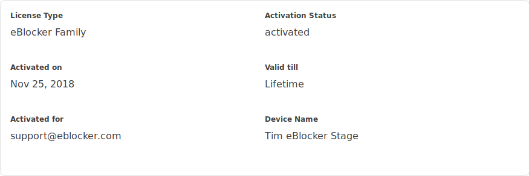
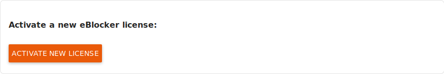
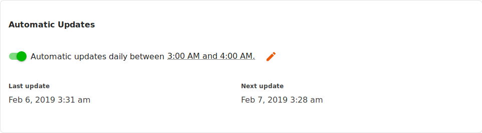

eBlocker Help > Knowledge Base > eBlocker Menu
eBlocker Base ✓ / eBlocker Pro ✓ / eBlocker Family ✓
This page is divided into the following sections:
You can read details about your activation status of your license and of your eBlocker here.

The link Buy license leads you to our eBlocker online shop.

The link Transfer license leads you to a website where you can remove the license off your device and use it for a different device.

By clicking on Activate new license you can update your license (e.g. to lifetime license) or upgrade your license (e.g. from eBlocker Pro to eBlocker Family).

This page shows you which versions of the eBlocker software and filter rules are currently in operation.

You can enable automatic updates, if you have activated a valid license for this device. You can also determine at what time these updates should be implemented.

Automatic updates are activated by default in the general settings and are implemented in your local time between 02:00 o’clock and 03:00 o‘clock.
If you deactivate the automatic updates, you can always import updates by yourself. The eBlocker will display a notice next to the Check now button, as soon as a new update is available for you.

Here you will find a short message from the eBlocker team.
Here you will find the End User License Agreement (EULA), the eBlocker General Terms and Conditions and the Open Source licenses used.